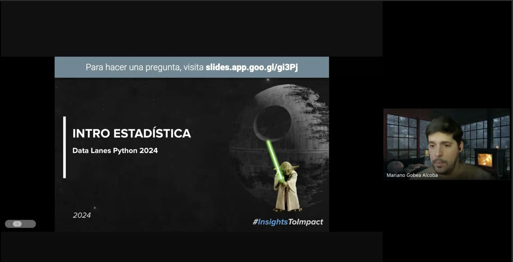

Últimos Proyectos realizados desde MGA
Data Lanes Python 2024
Capacitación de 7 semanas dictada a para Mercado Libre donde partimos de optimización de consultas SQL, y aprendemos Python para análisis de datos pasando por conceptos elementales y muy útiles de Estadística
